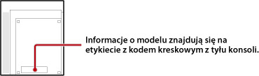

Rodzaje odtwarzanych płyt
W zależności od modelu konsoli PS3™ niektóre typy dysków mogą nie być odtwarzane. Informacje na temat zgodnych typów nośników można znaleźć w sekcji dotyczącej rozwiązywania problemów w dokumentacji dostarczonej z konsolą.
Płyty w formacie PlayStation®2 i płyty Super Audio CD — informacje
W poniższej tabeli wymieniono modele systemu PS3™, które odtwarzają większość płyt w formacie PlayStation®2 oraz płyty Super Audio CD.

| Region sprzedaży | Model |
|---|---|
| Japonia | CECHA00, CECHB00 |
| Stany Zjednoczone/Kanada | CECHA01, CECHB01, CECHE01 |
| Ameryka Łacińska | CECHE11 |
| Europa/Australia/Nowa Zelandia | CECHC02, CECHC03, CECHC04, CECHC08 |
| Korea | CECHE05 |
| Hong Kong/Tajwan/Azja Południowo-Wschodnia | CECHA12, CECHB12, CECHE12, CECHA07, CECHB07, CECHA06, CECHE06 |
Informacje na temat zgodności wstecznej
Nawet jeśli system PS3™ może odtwarzać płyty w formacie PlayStation®2 i PlayStation®, mogą one być odtwarzane inaczej niż na oryginalnym sprzęcie. W niektórych przypadkach płyty mogą w ogóle nie działać. Informacje na temat zgodności wstecznej można uzyskać w witrynie internetowej dla danego regionu.
Japonia
http://www.jp.playstation.com/ps3/status/
Stany Zjednoczone/Kanada/Ameryka Łacińska
http://www.us.playstation.com/Support/CompatibleStatus
Korea
https://www.playstation.co.kr/support